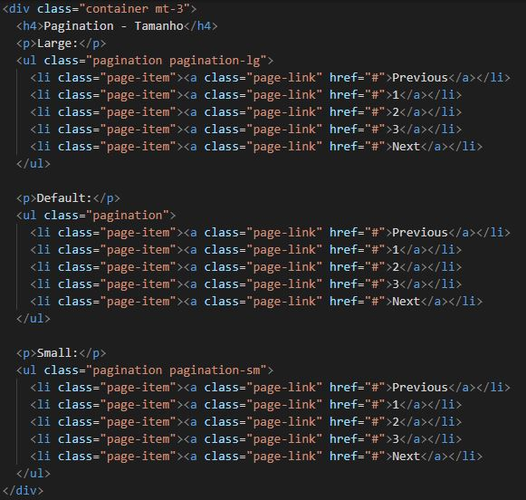
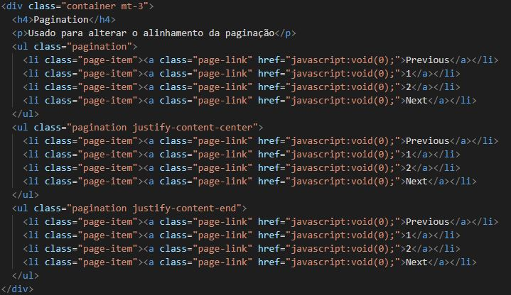
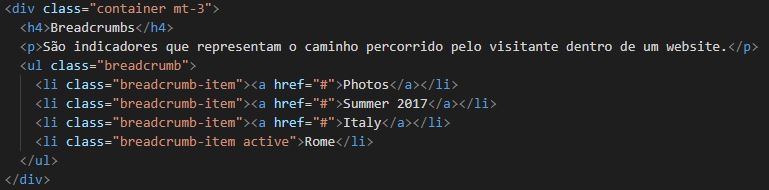
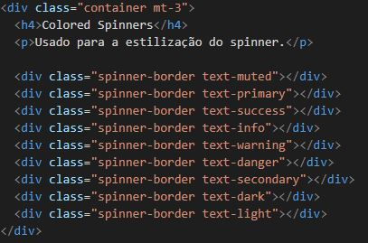
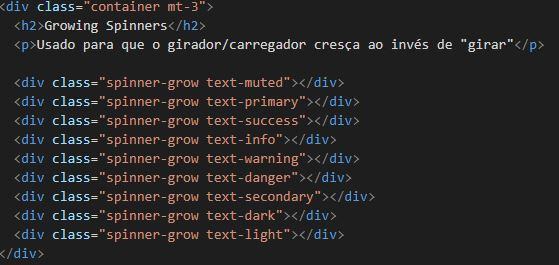
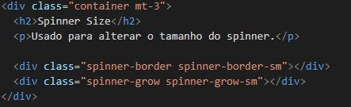
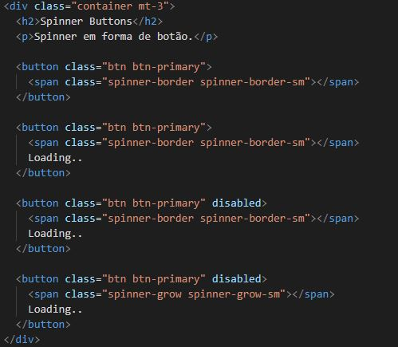

Large:
Default:
Small:
Usado para alterar o alinhamento da paginação
São indicadores que representam o caminho percorrido pelo visitante dentro de um website.
Usado normalmente para demonstrar o carregamento de arquivos, vídeos, dentre outros.
Usado para a estilização do spinner.
.
Usado para que o girador/carregador cresça ao invés de "girar"
.
Usado para alterar o tamanho do spinner.
Spinner em forma de botão.
.
